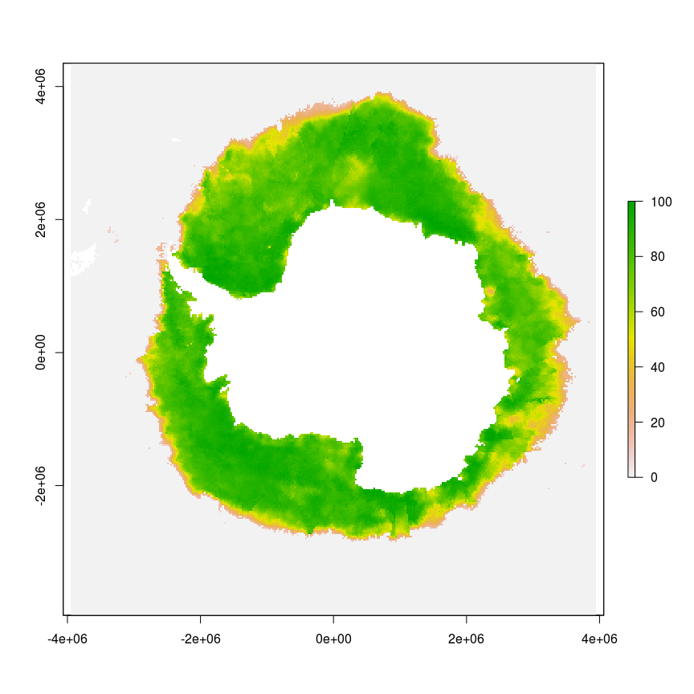
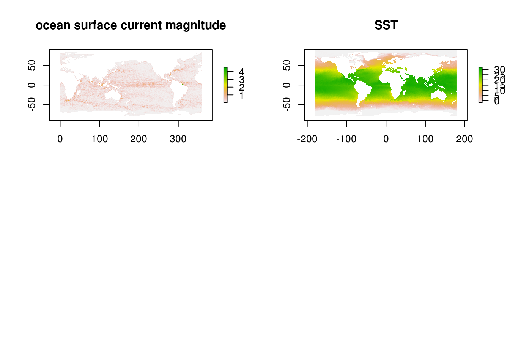
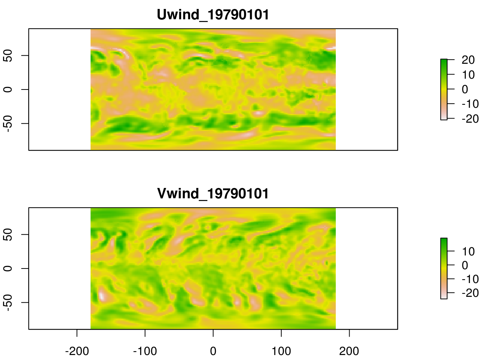
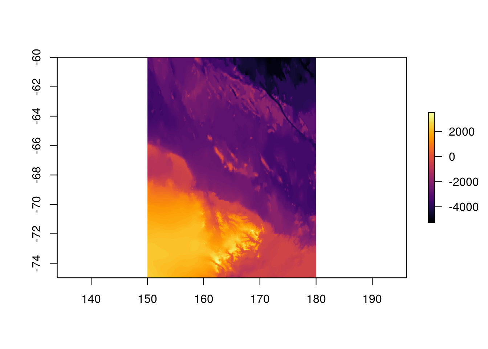
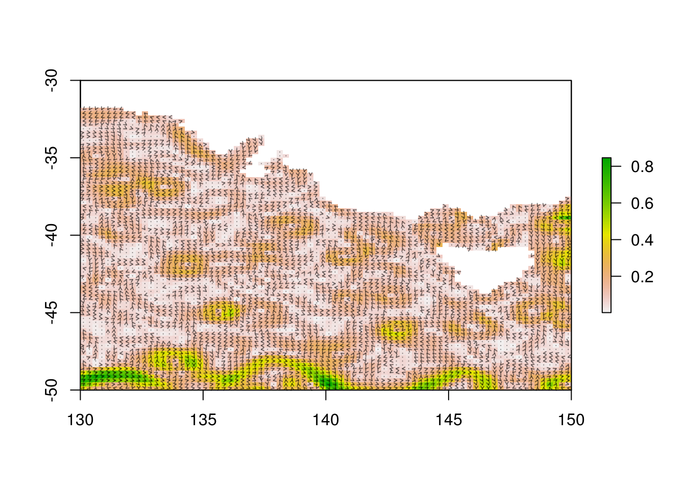

The raadtools package provides a set of helper functions based on functionality in the raster package, to simplify fast and efficient use of time series environmental data including
There is ongoing work to simplify extension of these tools to a wider range of data, but here we focus on the existing examples just to highlight the preferred ways of working with these data in R.
This document introduces the raadtools package. Some familiarity with R and the raster package is assumed.
This package relies on the availability of a local file repository which must be present, see the componente packages https://github.com/AustralianAntarcticDataCentre/raadsync and https://github.com/AustralianAntarcticDivision/raadtools.
The very first step is to load the package, which also triggers an attempt to connect to the file repository.
library(raadtools)
library(raster)(TO FIX: In subsequent code sections I’m also attaching raadfiles explicitly to make this document work, but it’s not necessary generally. )
library(raadfiles)
library(raadtools)
ice <- readice()
plot(ice)
There are functions to read data based on a sequence of date-time values.
At the simplest level, these functions may be run without setting any arguments and will return the first available time step for the default data source. This is handy for becoming familiar with the kinds of data before getting really specific. Plotting the resulting ice} object provides a familiar polar view. These data are a single time slice from the daily passive microwave sea ice concentration, here the very first one that is available (fromraster::getZ(ice)`).
Other read functions include reachla, readcurr, readsst, readwind and readtopo. Each of these will read a default data set in a similar way to the ice example, see their respective help pages and explore the index page of raadtools to see an overview of functionality.
Load up the package help index for an overview of all the help topics and functions.
library(help = raadtools)Read a simple example from each of the data types mentioned above and plot.
library(raadtools)
library(raadfiles)
## chlorophyll-a is currently only patchily supported
##chla <- readchla("2009-10-01")
curr <- readcurr("2012-01-09", magonly = TRUE, lon180 = FALSE)
sst <- readsst(c("2000-01-01", "2009-06-08"))
wind <- readwind()
##topo <- readtopo("george_v_terre_adelie", xylim = extent(140, 141.5, -65, -64))
apal <- chl.pal(palette = TRUE)
op <- par(mfcol = c(2, 2))
#plot(chla, col = chl.pal(apal$breaks), breaks = apal$breaks,
# main = "Johnson chl-a", legend = FALSE)
plot(curr, main = "ocean surface current magnitude")
plot(sst[[2]], main = "SST")
#plot(topo, main = "George V Terre Adelie bathymetry",
# col = topo.colors(68)[-c(40:68)])
par(op)
plot(wind, nr = 2)
The read calls above apply slightly different options in each case, with no arguments at all, with a vector of date-times, xylim to restrict the spatial extent an lon180 to control the Atlantic vs. Pacific view for global data extending across the dateline.
The ice object is a class(ice) from the raster package.
ice## class : RasterStack
## dimensions : 332, 316, 104912, 1 (nrow, ncol, ncell, nlayers)
## resolution : 25000, 25000 (x, y)
## extent : -3950000, 3950000, -3950000, 4350000 (xmin, xmax, ymin, ymax)
## coord. ref. : +proj=stere +lat_0=-90 +lat_ts=-70 +lon_0=0 +k=1 +x_0=0 +y_0=0 +a=6378273 +b=6356889.449 +units=m +no_defs
## names : nt_19781026_n07_v01_s.bin
## min values : 0
## max values : 100
## time : 1978-10-26This object is a RasterLayer which consists of just a single grid layer for the day listed at the beginning of the NSIDC data set. The dimensions of the grid are listed, (in the order Y then X) dim(ice)[1:2] and these refer to the number of cells seen vertically on the page (nrow(ice)) and those seen horizontally (ncol(ice)), and then the total number of cells (X * Y).
The raster package provides excellent facilities for working with raster data, including images, surfaces, DEMs and time series satellite data. From the raster package DESCRIPTION:
Reading, writing, manipulating, analyzing and modeling of
gridded spatial data. The package implements basic and high-level
functions and processing of very large files is supported.This package should be consulted for documentation on the use of Raster objects, and in particular the vignette Raster is a good place to start. Use the library function’s help argument to get an overview of the available functions.
library(raster)
## opens an index page to all of the package's functions
library(help = raster)
## opens a PDF document with extended help and examples
vignette("Raster")See the Section sec:assumedsupport for more detail on the design choices made with raster and the other package dependencies used by raadtools.
This section discusses the details of individual read functions and some of the rationale behind each one. Different data sets are stored with different native coordinate systems, different pixel and temporal resolutions, different data units, and cover different spatial and temporal ranges. As well as all these options, the way data are stored varies tremendously depending on the provider and the data type. These read functions all return either a Raster} object as defined by theraster` package with as complete and standard metadata as possible.
Some data sets are inherently multi-layered for a single time step, such as wind and current vectors and so these both have optional arguments dironly and magonly to convert the internal U and V vector components to directions or magnitudes only. The read operation may be combined with a spatial crop by using the argument xylim and there are other options specific for some data sets such as lon180 to control the default orientation (these topics will be discussed in more detail in later sections, otherwise see the documentation for each function argument).
The readtopo (readbathy is a synonym) will return one of several available data sets. See the help page for the details and source of each one. As these data are not dynamic on short time scales they do not provide a date argument. The ibcso data set is optionally available on a polar or longitude/latitude grid, controlled by the polar argument. The Smith and Sandwell data set is returned in Pacific view on the Mercator projection by default. Use lon180 = FALSE to return Atlantic view.
library(raadtools)
library(raadfiles)
geb <- readtopo("gebco_08", xylim = extent(150, 220, -75, -60))
plot(geb, col = viridis::inferno(100))
library(raadtools)
library(raadfiles)
## set up data in advance, to feed the plotting function
tst <- readcurr()
xylim <- extent(projectExtent(raster(extent(130, 150, -50, -30), crs = "+proj=longlat"), projection(tst)))
plotcurrents <- function(date = as.Date("1999-11-24"), ext = NULL, scale = 2, ...) {
x <- readcurr(date)
if (!is.null(ext)) x <- crop(x, ext)
crds <- coordinates(x)
plot(sqrt(x[[1L]]^2 + x[[2L]]^2), ...)
x1 <- crds[,1]
y1 <- crds[,2]
x2 <- crds[,1] + values(x[[1L]]) * scale
y2 <- crds[,2] + values(x[[2L]]) * scale
op <- options(warn = -1)
sink("/dev/null")
arrows(x1, y1, x2, y2, length = 0.03, col = "#00000080")
sink(NULL)
options(op)
invisible(NULL)
}
plotcurrents(date = as.Date("2000-01-05"), ext = xylim, scale = .1, asp = NA)
Animate a series of current plots as above.
library(raadtools)
library(raadfiles)
dts <- seq(as.Date("2005-10-01"), length = 104, by = "1 week")
pal <- sst.pal(palette = TRUE)
cols <- pal$cols[seq(1, length(pal$cols), length = 16)]
cols <- gsub("ff$", "99", cols)
brks <- pal$breaks[seq(1, length(pal$breaks), length = 16)]
#library(animation)
#ani.start()
#for (i in seq_along(dts)) plotcurrents(dts[i], ext = xylim, scale = 2500, col = cols, breaks = brks)
#ani.stop()These have all be tested at some point, though maybe not in the current version of this document.
More needs to be said here, and pictures . . .
library(raadtools)
a <- structure(list(x = c(174, 168, 156, 111, 99, 64, 52, 46, -4,
-15, -30, -38, -47, -62, -87, -127, -145, -160, -161), y = c(-72,
-39, -50, -58, -35, -38, -48, -60, -48, -35, -37, -51, -68, -72,
-69, -54, -40, -49, -54)), .Names = c("x", "y"), row.names = c(NA,
-19L), class = "data.frame")
a$time <- sort(as.Date("2005-01-01") + sample(c(0, 0, 0, 8, 20, 50), nrow(a), replace = TRUE))
extract(readssh, a)
extract(readssh, a, ssha = TRUE)
extract(readcurr, a, magonly = TRUE)
extract(readice, a)
#extract(readchla, time.resolution = "weekly")
#extract(readchla, a, time.resolution = "weekly")
##extract(readwind, a)
extract(readwind)
readwind(dironly = TRUE)
a$time <- sort(as.Date("1985-01-01") + sample(c(0, 0, 0, 10, 100, 50), nrow(a), replace = TRUE))
##x <- extract(readsst)
##extract(readsst, a)
##extract(readsst)
##extract(readsst, time.resolution = "daily")
##extract(readsst, a)d1 <- data.frame(lon = c(130, 125, 120, -52.27, 123.21, -25.42, 36.96, -36.28),
lat = c(-50, -52, -55,-66.31, -74.55, -69.66, -71.85, -68.56),
gmt = as.POSIXct("2006-02-08 00:00:00") + 24 *3600 * c(0, 1, 2, 3, 106, 118, 118, 190))
llproj <- "+proj=longlat +ellps=WGS84 +datum=WGS84 +no_defs +towgs84=0,0,0"
library(raadtools)
library(rgdal)
## test extract vs extractxyt
sst1 <- extractxyt("oisst", d1)
sst2 <- extract(readsst, d1)
mag1 <- extractxyt("aviso", d1, magonly = TRUE)
mag2 <- extract(readcurr, d1, magonly = TRUE)
ice1 <- extractxyt("nsidc", d1)
ice2 <- extract(readice, d1)
## these diffs should be zorro
max(abs(sst1 - sst2), na.rm = TRUE)
max(abs(mag1 - mag2), na.rm = TRUE)
max(abs(ice1 - ice2), na.rm = TRUE)
## now the goodstuff
sst3 <- extract(readsst, d1, method = "bilinear")
sst4 <- extract(readsst, d1, ctstime = TRUE)
sst5 <- extract(readsst, d1, ctstime = TRUE, method = "bilinear")
data.frame(sst = sst2, sst_xyinterp = sst3, sst_timeinterp = sst4, sst_spacetimeinterp = sst5)
## some time when we get chl-a
d2 <- data.frame(x = c(-40, -25, -6, 12, 33, 60, 89, 107),
y = c(-56, -55, -59, -62, -64, -62, -60, -60),
time = as.POSIXct("2006-12-18 00:00:00") + 24 *3600 * 7 * seq_len(8))
## resize by a factor in space so we get "more coverage"
# chla1 <- extract(readchla, d2)
# chla2 <- extract(readchla, d2, ctstime = TRUE, method = "bilinear")
# chla3 <- extract(readchla, d2, ctstime = TRUE, method = "bilinear", fact = 16)
# data.frame(chla = chla1, chla_spacetimeinterp = chla2, chla_resizespacetimeinterp = chla3)
#
# chl <- readchla(d2$time, xylim = extent(as.matrix(d2[,1:2])))
# chl2 <- aggregate(chl, fact = 16)
# pal <- chl.pal(palette = TRUE)
#
# ## compare the two plots, with and without spatial aggregation for "coverage"
# plot(chl, col = pal$col, breaks = pal$breaks, legend = FALSE, addfun = function() lines(d2[,1:2]))
#
# plot(chl2, col = pal$col, breaks = pal$breaks, legend = FALSE, addfun = function() lines(d2[,1:2]))
# All data sets availalable in raadtools are provided in their * This document was built with knitrhttp://yihui.name/knitr/